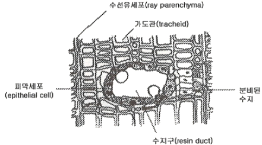
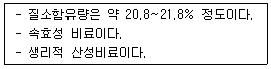

임업종묘기사 (2016-08-21 기출문제)
1과목: 조림학
1. 토양입자의 구분 중에서 자갈의 입경 크기 기준은?
- 0.001mm 이상
- 0.2mm 이상
- 2.0mm 이상
- 10.0mm 이상
(정답률: 알수없음)

2. 왜림작업으로 갱신하려 할 때 왕성한 맹아발아를 위해 가장 유리한 벌채 시기는?
- 겨울 ~ 봄
- 봄 ~ 여름
- 여름 ~ 가을
- 가을 ~ 겨울
(정답률: 알수없음)
3. 파종 후 발아 과정에서 해가림이 필요한 수종은?
- 느티나무
- 가문비나무
- 물푸레나무
- 아까시나무
(정답률: 알수없음)
4. 삽목 방법에 대한 설명으로 옳지 않은 것은?
- 삽수의 끝눈은 남쪽을 향하게 한다.
- 삽수가 건조하거나 눈이 상하지 않도록 한다.
- 포플러류 같은 속성수는 삽수를 수직으로 세운다.
- 비가 온 직후 상면이 습할 때 실시하면 활착률이 높다.
(정답률: 알수없음)
5. 중림작업을 통한 갱신에 대한 설명으로 옳은 것은?
- 내음성이 약한 수종을 하층목으로 식재한다.
- 하층목은 개벌에 의한 맹아 갱신을 반복한다.
- 상층목으로 쓰이는 것은 지하고가 낮은 것이 좋다.
- 상층목이 하층목 생장에 방해되지 않도록 ha당 1000본 정도로 식재한다.
(정답률: 알수없음)
6. 종자의 발아휴면성 원인과 관련 없는 것은?
- 배의 미성숙
- 가스교환 촉진
- 종피의 기계적 작용
- 종자 내의 생장억제 물질 존재
(정답률: 알수없음)
7. 목부 조직의 횡단면이 다음 그림과 같은 형태를 보이는 수종은?

- Abies koreana
- Quercus mongolica
- Cornus controυersa
- Robinia pseudoacacia
(정답률: 알수없음)
8. 제초의 효과가 있는 성분은?
- IAA
- NAA
- TTC
- 2, 4 - D
(정답률: 알수없음)
9. 지존작업에 대한 설명으로 옳은 것은?
- 묘목을 심기 위하여 구덩이를 파는 작업이다.
- 개간한 곳에 조림 묘목 식재하는 작업이다.
- 조림지에서 덩굴치기, 제벌을 행하는 것을 뜻한다.
- 조림예정지에서 잡초, 덩굴식물, 관목 등을 제거하는 작업이다.
(정답률: 알수없음)
10. 암수딴그루인 수종으로만 짝지어진 것은?
- 소철, 은행나무
- 소나무, 삼나무
- 버드나무, 자작나무
- 단풍나무, 상수리나무
(정답률: 알수없음)
11. 산림 토양에서 부식에 대한 설명으로 옳지 않은 것은?
- 토양 미생물의 생육을 자극한다.
- 토양의 입단구조를 형성하게 한다.
- 칼슘, 마그네슘, 칼륨 등 염기를 흡착하는 능력인 염기 치환 용량이 작다.
- 임상 내 H층에 해당되며 유기물이 많이 함유되어 있다.
(정답률: 알수없음)
12. 토양 수분에 대한 설명으로 옳지 않은 것은?
- 중력수는 중력의 작용에 의하여 이동할 수 있어 토양공극으로부터 쉽게 제거된다.
- 토양 내 작은 교질 입자 주변에 존재하거나 화학적으로 결합한 결합수는 식물이 이용 가능하다.,
- 모세관수는 중력에 저항하여 토양입자와 물분자 간의 부착력에 의해 모세관 사이에 남아있다.
- 포화습도의 공기 중에 시든 식물을 둔다 하더라도 시든 식물이 회복되지 않을 때의 수분량을 영구위조점이라 한다.
(정답률: 알수없음)
13. 목본식물 내 존재하는 지질(lipid)에 대한 설명으로 옳지 않은 것은?
- 보호층을 조성한다.
- 저항성을 증진한다.
- 세포의 구성성분이다.
- 세포액의 삼투압을 증가시킨다.
(정답률: 알수없음)
14. 조림지의 풀베기 작업에 대한 설명으로 옳은 것은?
- 풀베기 작업은 겨울철에 실시한다.
- 밀식조림의 경우에는 줄베기 작업을 한다.
- 모두베기할 경우 조림목이 피압될 염려가 없다.
- 둘레베기 작업은 노동력이 가장 많이 필요하다.
(정답률: 알수없음)
15. 산성 토양에 가장 잘 적응할 수 있는 수종은?
- Catalpa oυata
- Acer negundo
- Alnus japonica
- Larix kaempferi
(정답률: 알수없음)
16. 종자 정선 시 입선법을 이용하기 가장 적당하지 않은 수종은?
- 목련
- 밤나무
- 자작나무
- 가래나무
(정답률: 알수없음)
17. 종자를 파종하기 한 달 쯤 전에 노천매장을 하여 발아를 촉진시키는 수종은?
- 삼나무
- 벚나무
- 단풍나무
- 들메나무
(정답률: 알수없음)
18. 처음에는 피압된 가장 낮은 수관층의 수목을 벌채하고 그 후 점차 상층의 수목을 제거하는 HAWLEY의 간벌방법은?
- A종간벌
- 수관간벌
- 하층간벌
- 상층간벌
(정답률: 알수없음)
19. 가지치기에 대한 설명으로 옳지 않은 것은?
- 줄기의 완만도를 조절한다.
- 활엽수는 지융부를 제거한다.
- 옹이 없는 무절재를 생산한다.
- 산불 발생 시 수관화 확산을 감소시킨다.
(정답률: 알수없음)
20. 묘목의 굴취를 용이하게 하고 묘목의 생장을 조절하기 위해 실시하는 작업은?
- 단근
- 심경
- 관수
- 철선감기
(정답률: 알수없음)
2과목: 임목육종학
21. 리기다소나무와 테다소나무를 인공교배를 하고자 할 때 순서는?
- 화분조제→화분발아→인공수분→교배봉제거→관리
- 화분발아→인공수분→교배봉 씌우기→교배봉제거→관리
- 인공수분→화분조제→교배봉 씌우기→교배봉제거→관리
- 모수림 선정→교배봉 씌우기→인공수분→교배봉제거→관리
(정답률: 알수없음)
22. 임목육종 방법에 대한 설명으로 옳지 않은 것은?
- 선발 육종은 세대를 거듭해 가면서 임목을 개량하는 방법이다.
- 교잡 육종은 형질의 결합과 잡종강세의 출현을 목적으로 한다.
- 돌연변이에 의한 육종은 채종림을 육성하여 우수 품종을 얻는 방법이다.
- 도입 육종은 외국에서 우량한 유전인자 혹은 유전자원을 도입하여 육종하는 것이다.
(정답률: 알수없음)
23. 교배를 하기 위해 수집한 화분을 장기간 건전하게 저장하는 데 가장 적합한 방법은?
- 밀봉하여 냉건저장한다.
- 실온보다 높은 온도에 기건저장한다.
- 저온 조건에서 습도를 높이기 위해 냉습 저장한다.
- 습도를 충분히 유지할 수 있도록 실온에 보습저장한다.
(정답률: 알수없음)
24. t-RNA에 대한 설명으로 옳지 않은 것은?
- 클로버 모양이다.
- 상보성 염기들 간에 소수결합을 한다.
- 다른 RNA보다 상대적으로 길이가 길다.
- 코돈을 아미노산으로 대체시키는 역할을 한다.
(정답률: 알수없음)
25. 삼성잡종 F1의 경우 몇 가지 형태의 배우자형이 생기는가? (단, 독립유전함)
- 2
- 4
- 6
- 8
(정답률: 알수없음)
26. 우성 유전자연쇄설이란 무엇을 설명하는 가설인가?
- 사배체의 유전
- 위치효과의 유전
- 돌연변이의 출현
- 잡종강세의 출현
(정답률: 알수없음)
27. Pinus decsiflora × Pinus thunbergii는 어느 교잡에 해당하는가?
- 종내교잡
- 속간교잡
- 종간교잡
- 품종간교잡
(정답률: 알수없음)
28. 집구 내에서 플롯(plot)의 순서는 임의적이며 가장 일반적으로 사용되면서 비교적 자료 분석이 용이한 실험설계 방법은?
- 난괴법
- 라틴방격법
- 소형가계선발
- 완전임의배치법
(정답률: 알수없음)
29. 유실수의 조기 선발을 위한 개화촉진 방법으로 가장 거리가 먼 것은?
- 접목법
- 이식법
- 환상박피
- 지베렐린 처리법
(정답률: 알수없음)
30. 조직배양의 발달로 화분의 성숙 초기 단계인 약(꽃밥)의 배양에도 성공한 수종이 있다. 다음 중 약(꽃밥)의 염색체 수는?
- 반수체
- 이배체
- 삼배체
- 사배체
(정답률: 알수없음)
31. Pinus rigida × (P. rigisa × P.taeda)에 해당하는 교잡방법은?
- 여교잡
- 탑교잡
- 복교잡
- 중교잡
(정답률: 알수없음)
32. 수형목을 선발하는 방법이 아닌 것은?
- 목측법
- 구분구적법
- 비교선발법
- 절대표준치선발법
(정답률: 알수없음)
33. 교배에 대한 설명으로 옳지 않은 것은?
- 동계교배는 유전적 고정을 높인다.
- 이계교배는 유전적 변이를 많게 한다.
- 이계교배는 주로 타가수분이 행해지는 것이다.
- 동계교배에 의한 유전적 고정은 hetero 접합에서 온다.
(정답률: 알수없음)
34. 어떤 대립유전자가 다른 좌위(locus)에 있는 대립유전자의 표현에 영향을 주는 것은?
- 상위성
- 다수 유전자
- 우성 유전자
- 열성 유전자
(정답률: 알수없음)
35. 시험림 조성 방법으로 적합하지 않은 것은?
- 반복 내에서는 균일해야 한다.
- 지위는 중간 이하 지역으로 정한다.
- 활착률이 좋고 생장이 좋아야 한다.
- 검정목이 식재되는 시험지의 입지 조건을 가급적 균일하게 유지한다.
(정답률: 알수없음)
36. 상가적 유전분산이 40, 유전분산은 50, 환경분산이 50이라고 추정되었다면, 이 형질에 대한 협의의 유전력은?
- 0.1
- 0.3
- 0.4
- 0.5
(정답률: 알수없음)
37. 우리나라에서 도입육종으로 성공한 수종은?
- 소나무
- 백합나무
- 은수원사시나무
- 라디아타소나무
(정답률: 알수없음)
38. 모집단에 대한 추리에 있어 표본이 가정한 모집단에서 추출되었다고 볼 수 있는가 여부를 검정하는 것은?
- 상관분석
- 변이 검정
- 회귀 검정
- 유의성 검정
(정답률: 알수없음)
39. 인공림 침엽수의 수형목 지정기준으로 옳지 않은 것은?
- 상층 임관에 속하여야 한다.
- 한 지위에 편중하지 않도록 한다.
- 수령은 될 수 있는 한 30년생 이상의 것으로 한다.
- 임상의 둘레나 도로변의 나무 혹은 고립목은 제외한다.
(정답률: 알수없음)
40. 배수체 육종에 가장 효과적인 약품은?
- 포도당
- 콜히친
- 지베렐린
- 아브시스산
(정답률: 알수없음)
3과목: 산림보호학
41. 소나무재선충병에 대한 설명으로 옳은 것은?
- 기공을 통해 침입한다.
- 잣나무에서도 발생한다.
- 중간기주는 참나무류이다.
- 매개충은 담배장님노린재이다.
(정답률: 알수없음)
42. 기주식물 뿌리에 기생하여 피해를 주는 것은?
- 새삼
- 환삼덩굴
- 꼬리겨우살이
- 오리나무더부살이
(정답률: 알수없음)
43. 세균이 수목에 침입하는 경로가 아닌 것은?
- 각피
- 수공
- 기공
- 상처
(정답률: 알수없음)
44. 토양에 의해 전반되는 병은?
- 향나무 녹병
- 소나무 모잘록병
- 밤나무 줄기마름병
- 오동나무 빗자루병
(정답률: 알수없음)
45. 아황산가스 등 대기오염의 피해를 받은 나무에 심하게 나타나는 병은?
- 소나무 잎녹병
- 소나무 줄기녹병
- 낙엽송 가지끝마름병
- 소나무 그을음잎마름병
(정답률: 알수없음)
46. 기주를 교대하며 발생하는 병이 아닌 것은?
- 향나무 녹병
- 소나무 혹병
- 포플러 잎녹병
- 삼나무 붉은마름병
(정답률: 알수없음)
47. 제초제로 인한 소목 피해에 대한 설명으로 옳지 않은 것은?
- 피해목 주변의 토양을 비닐로 피복하면 제초제 선분의 해독이 더 어렵다.
- 피해증상은 전신적으로 나타나는 경우보다 국부적으로 나타나는 경우가 많다.
- 동일 장소의 서로 다른 수종이나 지표의 초본 식물에도 비슷한 증상이 나타난다.
- 병해충의 피해와 혼동되는 경우가 많으므로 정확한 진단에 따른 대책이 필요하다.
(정답률: 알수없음)
48. 솔나방에 대한 설명으로 옳지 않은 것은?
- 알로 월동한다.
- 1년에 1회 발생한다.
- 성충은 주로 밤에 활동한다.
- 6월~7월경 번데기가 된다.
(정답률: 알수없음)
49. 솔잎혹파리의 천적으로 생물적 방제를 위해 방사하는 것은?
- 상수리좀벌
- 노란꼬리좀벌
- 남색긴꼬리좀벌
- 솔잎혹파리먹좀벌
(정답률: 알수없음)
50. 솔수염하늘소에 대한 설명으로 옳지 않은 것은?
- 유충으로 월동한다.
- 남부지방에서는 1년에 2회 발생한다.
- 성충의 우화시기는 5월~8월경이다.
- 성충은 쇠약목이나 고사목에 산란한다.
(정답률: 알수없음)
51. 가구, 건물 및 마른 나무 등에 구멍을 뚫고 들어가 표면만 남기고 내부를 불규칙하게 식해하는 해충은?
- 가루나무좀
- 밤나무혹벌
- 천막벌레나방
- 호두나무잎벌레
(정답률: 알수없음)
52. 수목의 뿌리를 통해서 감염되지 않는 것은?
- 혹병
- 모잘록병
- 그을음별
- 자주빛날개무늬병
(정답률: 알수없음)
53. 물에 녹지 않는 유효성분을 유기용매에 녹여 유화제를 첨가한 용액으로 제조한 약제는?
- 유제
- 액제
- 수용제
- 수화제
(정답률: 알수없음)
54. 잎을 가해하는 해충은?
- 박쥐나방
- 밤바구니
- 어스렝이나방
- 미끈이하늘소
(정답률: 알수없음)
55. 수목에 나타나는 현상 중 표징에 해당하는 것은?
- 부패
- 위조
- 얼룩
- 포자형성
(정답률: 알수없음)
56. 리기다소나무 조림지에 피해를 주는 푸사리움 가지마름병에 대한 설명으로 옳지 않은 것은?
- 병원균은 상처를 통해 침입한다.
- 감염된 잎은 빛바랜 갈색으로 말라 죽는다.
- 바람이 약한 지역에 나무는 더 심하게 발생한다.
- 봄부터 가을까지 특히 태풍이 지나간 다음 터부코나졸 유탁제를 살포한다.
(정답률: 알수없음)
57. 오동나무 빗자루병 예방을 위해 매개충인 담배장님노린재의 방제시기로 가장 적절한 것은?
- 1월~3월
- 4월~6월
- 7월~9월
- 10월~12월
(정답률: 알수없음)
58. 곤충의 수컷 생식기관이 아닌 것은?
- 수정낭
- 수정관
- 부속샘
- 저정낭
(정답률: 알수없음)
59. 보르도액을 반복하여 사용하면 어떤 성분이 토양에 축적되어 수목에 독성을 나타낼 수 있는가?
- 철
- 구리
- 붕소
- 망간
(정답률: 알수없음)
60. 수목병 방제를 위한 예방법과 가장 거리가 먼 것은?
- 윤작
- 종묘 소독
- 항생제 주입
- 혼효림 조성
(정답률: 알수없음)
4과목: 토양학 및 비료학
61. 다음 토층 중 부식(腐植)층에 해당되는 것은?
- R층
- C층
- O층
- B층
(정답률: 알수없음)
62. 토양수분의 영구위조점에 근사한 pF 값은?
- 2.7
- 3.2
- 4.2
- 7.0
(정답률: 알수없음)
63. 물에 의한 운반 및 퇴적으로 생성되며 지역 또는 지형에 따라 토성 및 광물의 종류가 다른 모재(母材)는?
- 잔적층(殘積層)모재
- 붕적층(崩積層)모재
- 충적층(冲積層)모재
- 유기질(有機質)모재
(정답률: 알수없음)
64. 토양의 유기물 함량이 3%이고 그 토양의 C/N이 10이라면 탄질비로서 계산되는 토양질소의 함량은 얼마인가? (단, 토양 유기물 중의 탄소 함량은 58%이다.)
- 0.174%
- 0.274%
- 1.74%
- 2.74%
(정답률: 알수없음)
65. 다음 중 주요 토양 생성 인자를 옳게 나열한 것은?
- 모재, 지형, 강우량, 경사도
- 모재, 기후, 식생, 지형, 시간
- 기후, 지하수, 강우량, 기온, 식생
- 모재, 식생, 강우량, 지하수위, 경사도
(정답률: 알수없음)
66. 우리나라에서 가장 많이 분포되어 있는 기암은?
- 혈암(shale)
- 화강암(granite)
- 석회암(limestone)
- 화강편마암(granite gneiss)
(정답률: 알수없음)
67. 포드졸(podzol) 토양에 대한 설명으로 틀린 것은?
- 표층에 조부식층이 있다.
- 규산이 용탈되어 B층에 쌓인다.
- 철, 알루미늄이 하층으로 이동되어 반절층을 이룬다.
- 용탈층과 직접층이 확연한 특징적 토양단면을 이룬다.
(정답률: 알수없음)
68. 주로 운모류 광물의 풍화로 생성된 토양에 많이 존재하는 점토광물은?
- 일라이트(illite)
- 크로라이트(chlorite)
- 카올리나이트(kaolinite)
- 버미큘라이트(vermiculite)
(정답률: 알수없음)
69. 조성에 있어서 토양공기(soil air)가 대기와 뚜렷이 다른 점은?
- 관계습도와 이산화탄소 함량이 낮다.
- 관계습도와 이산화탄소 함량이 높다.
- 관계습도가 낮고 이산화탄소 함량이 높다.
- 관계습도가 높고 이산화탄소 함량이 낮다.
(정답률: 알수없음)
70. 토양 공극에 대한 설명으로 틀린 것은?
- 토성별 공극양은 식토가 가장 크다.
- 소공극이 발달된 토양에서는 주로 공기의 운동이 빠르게 일어난다.
- 고운 토성의 토양은 공극률이 높다.
- 입단이 잘 형성된 토양은 전체적인 공극률이 커진다.
(정답률: 알수없음)
71. 복합비료(22-22-22) 25kg을 시용하였을 때 시용된 인산의 성분량은 약 몇 kg인가?
- 5.5kg
- 15.5kg
- 22kg
- 25kg
(정답률: 알수없음)
72. 용과린의 제조 방법으로 옳은 것은?
- 용성인비와 인광석을 섞어 만든다.
- 용성인비와 과석을 섞어 만든다.
- 인광석에 황산을 처리하여 만든다.
- 용성인비와 인산을 처리하여 만든다.
(정답률: 알수없음)
73. 요소를 기름을 짠 콩깻묵과 섞어서 오래 두면 암모니아가 날아가는 현상은?
- 요소의 산화작용
- 요소의 가수분해
- 요소의 환원작용
- 요소의 불용화 작용
(정답률: 알수없음)
74. 다음 [보기]의 성질을 가지는 질소질 비료는?

- 석회질소
- 황산암모늄
- 질산암모늄
- 요소
(정답률: 알수없음)
75. 요소(Urea)비료에 대한 설명으로 틀린 것은?
- 분자식은 CO(NH2)2로서 N성분이 약 46.66%이다.
- 토양 중에서 신속하게 분해하여 암모늄카르바메이트가 된다.
- 암모니아와 이산화탄소를 고온, 고압 하에서 직접 반응시켜 제조한다.
- 연용(連用)하여도 토양을 산성화시키지 않으며 노후화답에도 비효가 우수하다.
(정답률: 알수없음)
76. 토양에 존재하는 칼륨의 형태에 대한 설명으로 옳은 것은?
- 치환성 칼륨은 작물에 가장 잘 흡수 이용되는 칼륨이다.
- 우리나라 농경지토양 중 평균칼륨의 양은 약 3%이다.
- 식물생육에 가장 중요한 것은 비치환성 칼륨이다.
- 비치환성 칼륨은 풍화작용을 받지 않아도 작물이 이용한다.
(정답률: 알수없음)
77. 순무의 갈색속썩음병과 셀러리의 줄기쪼김병은 다음 중 어떤 성분의 결핍 때문에 일어나는가?
- P
- N
- Zn
- B
(정답률: 알수없음)
78. 완전구의 수량을 100으로 하고, 무칼륨구의 지수를 85, 무인산구를 65, 무질소구를 55, 무비료구를 40으로 하였을 때 각 성분의 단독 또는 공력의 효과로 틀린 것은?
- 질소의 단독효과는 45이다.
- 인산ㆍ칼리 공력효과는 15이다.
- 3요소 공력효과는 35이다.
- 질소ㆍ인산 공력효과는 45이다.
(정답률: 알수없음)
79. Mg과 길항(Antagonism)관계를 갖는 양분은?
- Cu
- Na
- Mn
- Fe
(정답률: 알수없음)
80. 용성인비의 특성이 아닌 것은?
- 염기성 비료이다.
- 인산질 비료이다.
- 밑거름으로 주로 사용된다.
- 연용(連用)을 피하여야 한다.
(정답률: 알수없음)